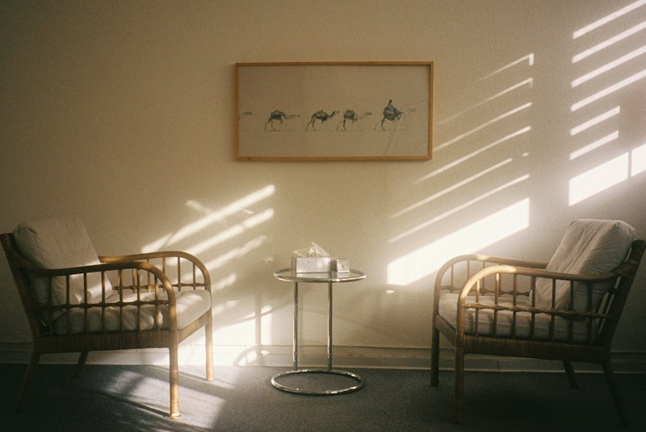

Ano ang kailangan mo ngayon?
What do you need right now? A professional you can check, a five-minute guide, a group that meets around something you enjoy, or a line you can call tonight. Kadua means someone who is with you.
Not sure who you need? Start with psychologist, psychiatrist, or counselor?
Four doors. Pick one.
Each one leads to a real next step, and Kadua steps back once you're through.
-

Professional Support
Propesyonal na tulongPsychologists, psychiatrists, counselors, and organizations you can filter by type, mode, area, and fee. Every listing is checked before it appears.
Search the directory -
Self-Care
Pag-aalaga sa sariliShort, reviewed guides on everyday wellbeing and on using support well. Information, not treatment.
Read the guides -

Community & Hobbies
Komunidad at libanganCurated groups that meet around something you enjoy, with clear rules and a way to report anything.
Find a group -
Immediate Help
Agarang tulongConfirmed crisis and emergency lines, with a plain explanation of what happens when you call.
See the numbers
How it works
Three steps, one visit. No account, no forms, no waiting room.
- Choose a door
Professional support, self-care, community, or immediate help. The home page is this choice.
- Explore checked options
A short list with the basics you need: what it is, how it works, roughly what it costs, and when it was last checked.
- Connect
Follow through to the provider, guide, group, or hotline. Your relationship is with them. Kadua steps back here.
Guides you can read in five minutes
Plain language, drafted from public health guidance, reviewed before they're marked done.
Psychologist, psychiatrist, or counselor: who do I need?
What each one does in the Philippines, and how to check a license.
Before you call a hotline
What the call is like, what to have ready, and what to do if you can't get through.
How to support someone who's struggling
Listening without fixing, asking the hard question, knowing when to call.
Connection around something you enjoy
Running clubs, chess corners, choirs, crochet circles, board game nights. Kadua lists groups only after talking to the organizer and agreeing on the rules, so you know what to expect before you show up.
- Organizers we've spoken with
- Public places or public platforms
- A report link on every listing
- Crisis routing to Immediate Help


What Kadua is, and isn't
Support can mean more than one thing. Some days you need reliable information. Some days a professional, or an everyday habit, or people, or urgent help. Those resources exist, but they live on different sites and pages, and finding the right one when you're already tired is its own problem.
Kadua puts the starting points in one place and says plainly what each one is for. It is not a clinic, a hotline, or a substitute for qualified care. Think of it as the friend who knows where to look.
More about how Kadua works
If you need help right now
You don't need the right words. Call, and a responder will take it from there. If anyone is in danger, call 911 or go to the nearest emergency room.
Open 24 hours a day. Numbers last checked 2026-10-25. All confirmed lines and what to expect.

Common questions
Does Kadua cost anything?
No. Searching the directory, reading the guides, and using the Immediate Help page are free, and there is no account. Professionals and partner institutions pay for listings and sessions, which is what keeps the site free for you.
Are the professionals real and licensed?
Every listing will go through a license check with the Professional Regulation Commission, a contact check, and a spot-check by a licensed adviser, and will carry the date it was last checked. Right now the directory shows clearly labelled sample entries while the first real listings clear that process.
Is this therapy or counseling?
No. Kadua lists and refers. Nothing here diagnoses you or treats you. The guides are information, and the professionals you reach through the directory are the ones who provide care.
What do you do with my information?
The site itself has no accounts and stores nothing about you. The only information Kadua holds comes through its forms, which run under a privacy notice and consent; we keep only what a form asks for, for the purpose it states, and delete it when you ask. Read the privacy note.